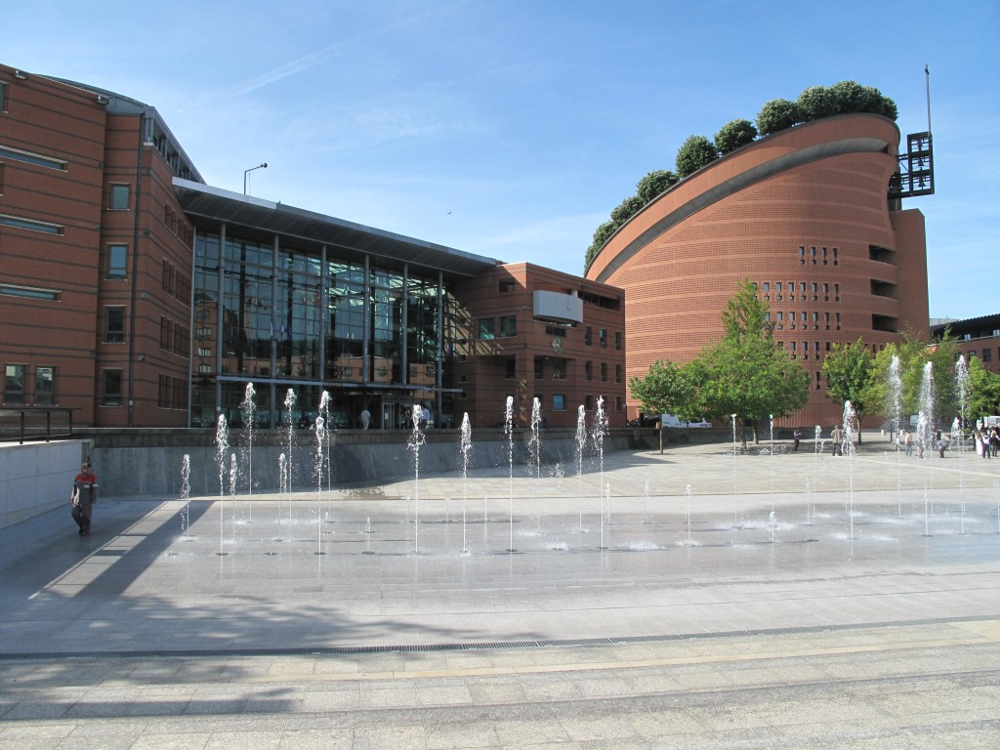
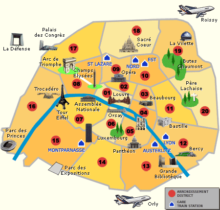

Cultural information
Les climats
The North-East of France is damps thanks to the Atlantic Ocean e.g.: Cherbourg (winter: 8° C and summer: 20°C)
The North-West of France is very cold during winter and quite warm e.g.: Briançon (winter: 3°C and summer: 25°C)
The South of France is very warm all the time and very hot during summer with a little wind, e.g.: Nice (winter: 12°C and summer: 28°C)
The last, but not least, Paris, the capital: winter: 5°C and summer: 25°C
Religions
Firstly, 55 % of French people consider themselves as Catholic but in reality, only 10% practice regularly and go to church.
Then, the majority of Protestants are in Alsace (North-East), in the Jura (Middle-East), in the Massif Central (South-East) and in the Atlantic coast.
Plus, there are 4 millions Muslims, so, they represent the second sisterhood in France. Sometimes, relationships between the Catholics and the Muslims can be tense.
Finally, 600 000 Jewish live in France, even 50% of them live in Paris.
Gastronomy
French cuisine has a very good reputation abroad. Indeed, it’s well-known thanks to three products:Vin (Wine): France produce more than 63 million hectoliters per year (1st producer). We advise you wine from:
Bordeaux (Médoc, Graves, Saint-Emilion, Pomerol, Sauterne,Barzac, Monbazillac)
Bourgogne (Chablis, Côte de nuit, Côte de Beaune,Beaujaulais)
Champagne
Muscade
A glass of wine is very appreciated for each meal, even it’s for business or with your family.
Fromage (Cheese): France produces 365 types of cheese which come from goat, sheep and cow’s milk. Cheese is eaten at breakfast, lunch or dinner.
Baguette (Bread): There are very different kinds of bread. If you want to discover them, just go to the bakery or boulangerie. French people eat bread 167g each day and 3.48 million of tones are produce each year. Consequently, a meal without bread for a French person isn’t a real one!
Moreover, you can savor several specialties, depending on which region of France you are. You can find seafood on the coast, cheese and sausages near mountains, Dutch cuisine on the North-East etc. That’s why, during your stay in France, travel for discovering the real France (:
French culture can be seen thanks to architecture, furniture, museums…
Newspaper
Press is very diversify in France, you’ll find a lot of newspaper and magazines according to your hobbies. Le Monde, Le Figaro, Libération, Les Echos, Le canard Enchaîné…
Here are some cultural customs and habits that French people have.
Don’t be astonished ;)
“La Bise” and “Serrer la main”
What is it?
In France, “La bise” is a way to say hello or bye to someone, even he or she is just an acquaintance. It’s use to show an intimate and close relationship: (new) friends, family etc.
If you’re a girl, you can do it to girls and boys and if you’re a boy, just do it to girls. Boys between them prefer to do a hand shake.“Se serrer la main” or so-called the “hand shake” is also a way to greeting people. Indeed, it’s more use in formal context to show your respect. For example, to a superior during a job interview, your superior at work or to a colleague.
How to do it?
For “La bise”, offer your right cheek and touch the other’s right one, then offer your left cheek and touch the other’s left one.
“L’eau du robinet” (tap water)
It might be odd for some of you, who come from Asia etc… But you can drink water from the tape water!Consequently:
You don’t waste your money by buying bottle of water
You don’t need to carry heavy bottles from the supermarket to your place
The “Métro” and “RER”
Have you already used the subway to go to Paris or anywhere else? If the answer is yes, you may notice that on escalators, people who don’t want to walk stand on the right, and who are in a hurry walk on the left side.
Remember that rush-hours are in the morning (between 7.00 a.m and 9.30 am) and in the late of afternoon (6.00 pm and 8.30 pm).
“Aller prendre un verre” (have a drink)
In France, many people don’t come back home directly after working. That’s why, they like to drink a coffee at a café or a beer/cocktail at a bar to chat with their friends. It’s also very common when they have a break to do that, it’s called “La pause café”.
“Nous ne sommes jamais contents” (strike)
French people are very famous for demonstrations. Don’t panic, it’s just a way to show our dissatisfaction! Moreover, you can see that French people seem to be grumpy all day long and not friendly and the first meet. But actually, we are very welcoming.
Taboos and don’t do
French people don’t like to talk about money (incomes, etc.), that’s why they don’t show off.
Never ask how old a lady is.
Speaking loudly in a public space isn’t well seeing. Remember that people don’t want to know your life.
It’s on your own appreciation to give tips in restaurants or not.
Évry and nearby

Evry, the capital of the Essonne Region, has for many years focused on cutting-edge technologies: Génopole, Arianespace, CNES, Snecma moteurs and many other public and private laboratories, universities, schools and innovative companies are located in the area.
The campus is set at the heart of a culturally dynamic town with many green open spaces, only 30 minutes away from Paris.
•220 hectares of green open areas
•6 parks
•Walks along the banks of the River Seine
•1 theater
•National Music Conservatory
•Access by RER D or A6 motorway
Useful links:
www.evry.fr
www.tourisme-essonne.com
CNES, Snecma Motors, etc. Cultural life is particularly dynamic around Évry, with the Agora Theater and the National Music Conservatory. It is also one of the greenest towns in France, with 220 hectares of parkland. The town is very accessible, located 30 minutes from Paris on the RER D line or the A6 highway
Visit Paris per District

Here, you got the description of the main place (monument, museum…) of Paris that you should visit during your study with us. There are 20 districts in Paris that is why there is not the description of all places. Paris is a wonderful old city with a lot of secretive charming places.
Here is a link with more details on some monuments.
The 1st district:
The “Palais Royal” and its garden: this palace was built in 1628 by the Cardinal Richelieu. When he died in 1648, he left it to the future king of France: Louis XIV.
The “Halles”: there are a lot of shops! This district was called by Emile Zola the “belly of Paris” (“Ventre de Paris”) because it was the marketplace of Paris until 1970. The marketplace was transferred to Rungis. The international market of Rungis is now the biggest Marketplace of fresh product in the world. There are in Halles a lot of gardens and a forum with shops. It was inaugurated in 1879 by the mayor of Paris, Jacques Chirac.
You can also visit a lot of churches such as the “Sainte-Chapelle”, the church “Saint-Roch”, the church “Saint-Eustache and so on! There is also another famous place such as the “Palais de Justice”, the “Place Vendôme” to the “Place de la Concorde” and of course the “Samaritaine”!
The 3rd district:
The Museum Carnavalet was built by Nicolas Dupuis in the 16th century. Paris bought it to Madam de Sévigné in 1886. Nowadays, you can find all the history of Paris in the museum since the Prehistory.
The Museum of Picasso or Hotel Salé: this hotel was built in the 17th century for Pierre de Fontenay who collected taxes on salt (that’s why the name of the hotel “salé” or “salt” in english). Now, the museum has got more than 3500 works of Pablo Picasso left by his last wife Jacqueline Picasso.
The 4th district:
Détail du “plan de Paris” de Melchior Tavernier vers 1630
Paris or Lucrèce (it first name) has it origin at the “Île de la Cité”. During the Antiquity, Parisis Gallic lived there before being expelled by Romans of Jules Cesar in 52 AC. This Isle has been a hub for business in the Seine.
In its right, there is the “Île saint-Louis”. It is an old city exclusively built to live there. That is why its architecture is really old and romantic. A lot of foreign billionaires and celebrities want to live there.
The “Hôtel de Ville” or the City hall of Paris was built until 1533 and finished in 1628. It was renewed many times. There is a skating rink every year from December to March. The entrance is free but the location of skates costs 5 Euros.
The 5th district:
The Pantheon: in 1744, Louis XV very ill promised that if he would recover, he will transform the Abbey Sainte-Geneviève to a pantheon. In 1791 during the French revolution, the church closed to open a crypt for men who contributed to the freedom of France. Now, there are many famous personnalites such as : Emile Zola, Jean-Jacques Rousseau, Voltaire, Jean Jaurès, Jean Moulin, Monnet, Pierre and Marie Curie or André Malraux. The Pantheon was designed by Soufflot in a neo-classical style.
The 7th district:
The Invalides: in 1670, Louis XIV decided to build a shelter for disabled soldiers or old soldiers. “Invalide” means “disabled” in French. The architect Libéral Bruant designed it. In 1674, the first disabled soldiers could come. There was a hospital which is now a part of the museum. Many churches were built. Now, the Hôtel des Invalides is a museum about army.
The 8th district:
Obelisk ParisNear the Invalides and down the Avenue des Champs-Elysée, there is the Place de la Concorde with the Obelisk. The Obelisk of Louxor (3,300 year old, 22.86 meters long and 227 tones) was offered by Egypt to France in 1836 to thank Champollion who translated hieroglyphs. That is a sundial.
Many Universal Expositions took place in Paris.
In 1900, two wonderful palaces were built:
•The Grand Palais which is landmarks dedicated to the glory of French art and aims to welcome artistic events.
•And the Petit Palais.
In 1937, many palaces were also built:
•The Palais de Tokyo for modern and contemporary art.
•And the Palais de Chaillot.
The Avenue des Champs-Elysées is considered as the most beautiful avenue in the world. The “Champs Elysée” was a place in hell where pure souls were in the Greco mythology. The Arc de Triomphe is a monument built in 1808 by Napoleon after the victory of the battle in Austerlitz.